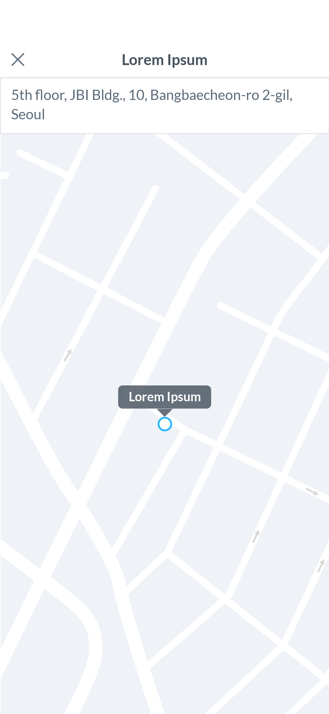
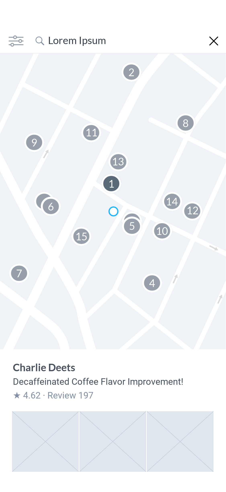
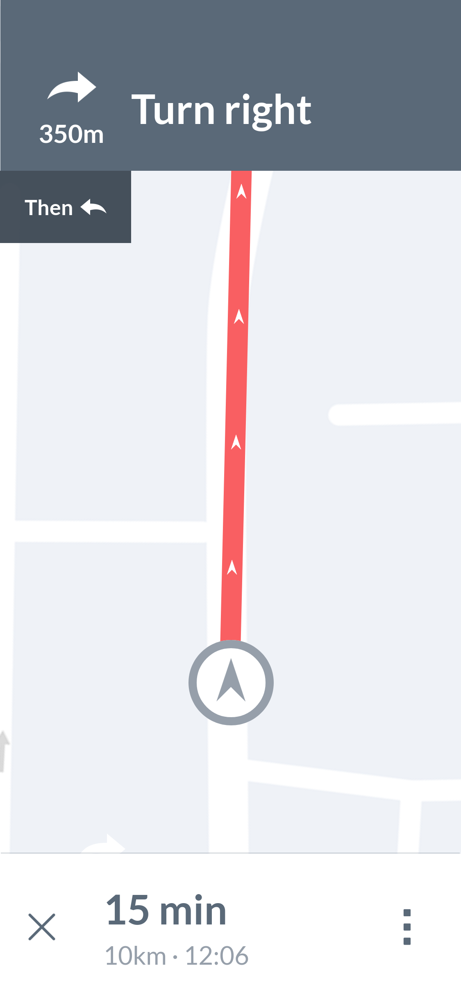

사용자의 능동적 인터렉션 없이 위치 정보를 제공한다. ‘Content’ 태스크에서 장소 정보를 제공하는 경우 지도 썸네일이 노출되며, 썸네일 선택 시 노출되는 지도 페이지에서 확장된 영역 내의 선택 콘텐츠의 장소 정보를 확인할 수 있다. 실시간 장소 정보가 주효한 차량 배차 및 배달 서비스 등의 경우 사용자에게 현재 위치를 알리는 용도로도 사용된다.
모빌리티 예약, 여행지 소개, 레스토랑 검색 등의 서비스에서 목록형 검색 결과의 지도로 보기 모드 옵션으로써 제공된다. 사용자는 본 옵션을 통해 현재 위치나 지정된 지역을 바탕으로 원하는 결과값을 도출할 수 있다. 검색 결과는 지도 위에 핀 형태로 제공되며 선택 시 해당 핀에 대한 상세 정보가 노출된다.
사용자의 현재 위치를 기반으로 원하는 장소로 도달할 수 있도록 실시간 방향 정보를 제공한다. 이동 중 정보 인지가 필요하므로 정보의 가시성을 높이고, 버드 아이 뷰(bird’s-eye view), 퍼스펙티브 뷰(perspective view), 다양한 축척 설정 등 사용자 커스텀 기능을 제공한다.
